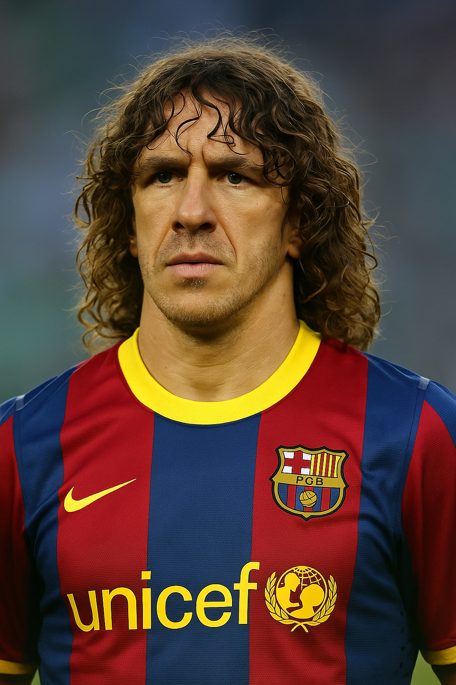
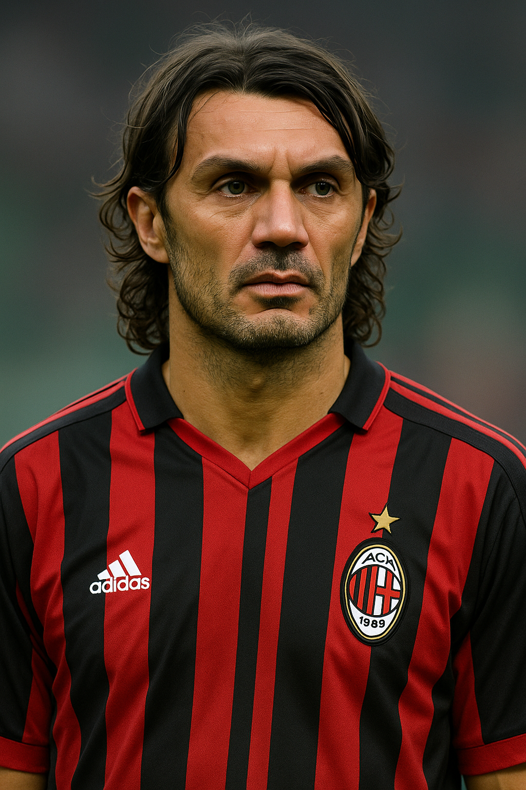
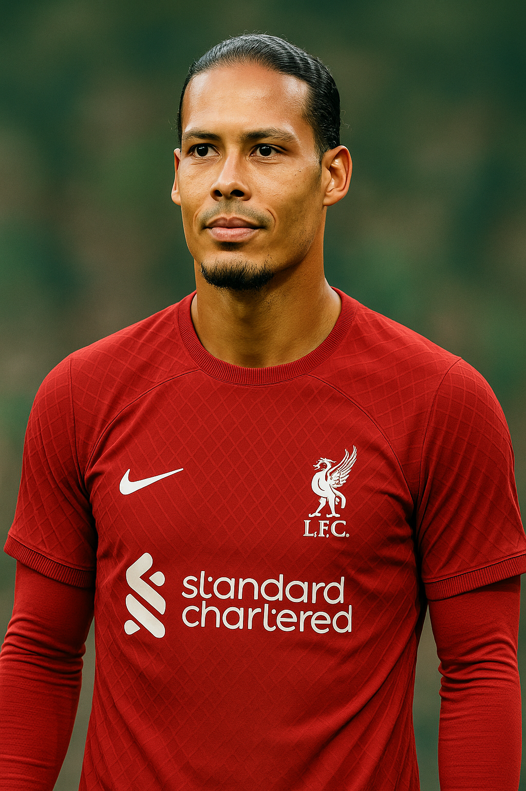

Carles Puyol

Defensa central
Palmarés:
- 3x Champions League
- 6x La Liga
- 1x Copa del Mundo (2010)
Habilidades:
- Fuerza y entrega total
- Liderazgo en el vestuario
- Coraje defensivo
"El eterno capitán del Barça y de la Roja"
Paolo Maldini

Lateral / Defensa central
Palmarés:
- 5x UEFA Champions League
- 7x Serie A
- 1x Copa Mundial sub-21
Habilidades:
- Elegancia y posición
- Anticipación y lectura de juego
- Versatilidad (lateral y central)
"One of the greatest defenders of all time"
Virgil van Dijk

Defensa central
Palmarés:
- 1x Premier League
- 1x UEFA Champions League
- 1x Supercopa de Europa
- 1x Mundial de Clubes
Habilidades:
- Dominio aéreo
- Lectura táctica impecable
- Salida limpia con el balón
"El muro neerlandés que domina la defensa moderna"